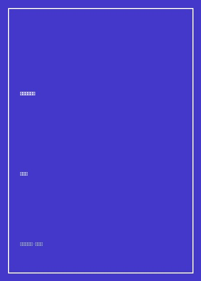

《平原上的摩西》

总体观点
《平原上的摩西》是青年作家双雪涛名震华语文学界的标志性中篇杰作，被公认为引爆当代“东北文艺复兴”浪潮的开山之碑。小说扎根于九十年代末重工业转型阵痛中的沈阳铁西区艳粉街，巧妙借助了一桩扑朔迷离的悬疑凶案外壳——1995年平安夜出租车司机连环被杀案中，老刑警蒋不凡在郊区烟粉桥设卡盘查时中枪身亡，凶手人间蒸发；十二年后，纨绔少年成长为年轻刑警的庄树，在一枚泛黄的红星烟头与改装枪支零件线索中，意外将悬案指针一步步拨向了自己童年邻家那个残疾女孩李斐。
双雪涛在小说形式上展现了极为惊艳的现代小说建筑美学。全书彻底打破了单线条刑侦侦破逻辑，开创性地采用了由七个不同人物（下海商人庄德增、精神洁癖母亲傅东心、牺牲警察蒋不凡、冷面少年孙天博、下岗工人李守廉、刑警庄树、断腿少女李斐）各自作为第一人称交替自述的“罗生门复调叙事”。每一位讲述者都带着自身记忆的盲区、阶层偏见与未解之谜，宛如拼图碎片，将九十年代国企下岗潮中数以百万计普通工人的命运断裂、家庭离散与尊严沉沦细腻拼合而出。
小说的最高潮发生在一座早已结冰的公园人工湖上。小说名字中的“摩西”具有深邃的形而上学隐喻——那是旧约出埃及记中劈开红海带领苦难众生走出奴役荒原的先知。在刺骨寒风吹拂的湖心，年轻刑警庄树与坐在轮椅上的残疾少女李斐相向而坐，李斐要求庄树把湖面劈开才能交出藏在怀中的手枪；庄树从口袋掏出一盒火柴在寒风中划亮递给李斐，那一缕微弱的火苗点燃了红纱巾，也点亮了漫天飞雪中普通人在命运深渊深处相濡以沫的微光。这是一曲献给整个东北工业时代落幕阵痛的纯净安魂曲。
核心观点
-
1. 罗生门式的复调拼图：用多重視角还原历史阵痛的毛孔细节
单一视角的英雄侦探无法穷尽时代全貌。借由商人、知识分子、下岗工人与警察各自带有主观偏狭的回忆交织，真相方在叙述断层处轰然显现。
同一场平安夜凶杀，在蒋不凡视角中是敏锐的抓捕与意外的枪响，在李守廉视角中是为了凑女儿学费的慌不择路，拼凑出命运无常的完整闭环。 -
2. 铁锈与下岗潮的深层创伤：巨型国企崩塌下一代人的尊严碎裂
拖拉机厂与冶炼厂的机器轰鸣戛然而止，铁饭碗打碎后的工人瞬间沦为时代弃儿。为了给患病骨折的女儿治病，老实本分的八级钳工不得不铤而走险。
李守廉下岗后在街头摆摊修自行车，因为无照经营被城管掀翻摊位毒打，看着地上散落的扳手零件，默默咬牙将猎枪锯短藏入破棉袄怀中。 -
3. 傅东心的精神洁癖：在庸俗现实中守护艺术神火的孤独代际传承
家庭成分受损的知识分子母亲拒绝与粗鄙世俗的商人丈夫同流合污，将全部文学与绘画灵性毫无保留地传授给邻家女童李斐，种下了悲剧的火种。
傅东心在工厂家属院昏暗的台灯下教七岁的李斐读古诗、画素描，告诉她“哪怕全世界都塌了，你心里也必须有一片不被弄脏的地方”。 -
4. 烟火与断腿的宿命捉弄：一次少年的爽约引爆两个家庭的半生毁灭
童年庄树无心的一句“平安夜去放烟花”的爽约，导致李斐父女在寒风中苦等并遭遇蒋不凡盘查，慌乱中车祸起火截肢，两个孩子的人生自此彻底分岔。
李斐在撞车爆炸中被变形的车门活生生夹碎了双腿膝盖骨，从一个能歌善舞的灵动少女沦为终身依靠轮椅度日的残疾人，而庄树那一夜正睡在温暖的席梦思上。 -
5. 劈开湖面的火柴奇迹：在严酷荒原深处以微光完成终极救赎
摩西不需要神杖，凡人指尖的一抹火柴光芒便能融化仇恨的坚冰。在绝望的对峙尽头，接纳彼此的苦难与创痛，是人类在残酷命运前唯一的自赎。
湖面上庄树划亮火柴，双手护着微弱的橘色火苗一步步走向李斐：“你不是要看分水吗？如果我能把这湖水劈开，你跟我回去。”李斐眼眶含泪吹熄了火柴。
全书思维导图 · 知识脉络树
全书结构
-
第一至四节 庄德增、傅东心、蒋不凡与孙天博的视角交织
从九十年代初艳粉街工厂大院的邻里生活开篇，展现庄家下海暴富、傅东心收徒李斐，直到1995年平安夜老刑警蒋不凡在公路设卡离奇中弹身亡。
蒋不凡坐在夏利出租车副驾驶座上点燃一支红星烟，假装旅客与李守廉攀谈，突然瞥见后座小女孩怀中露出的自制火药引线，手伸向腰间手枪。 -
第五至六节 庄树与李守廉的十二年时空跨越
时空跃迁至2007年，混子少年庄树警校毕业重查悬案，抽丝剥茧寻找改装气枪来源；插叙李守廉在车祸女儿截肢后背井离乡的逃亡苦役岁月。
庄树在老档案室翻阅泛黄的案卷照片，无意中看到当年现场遗留的一个生锈发卡，脑海中轰然炸开童年邻家妹妹李斐别在发髻上的红发夹。 -
第七至八节 赵小东的追踪与李斐的绝命重逢
老刑警赵小东在诊所布控锁死嫌疑人，孙天博为了掩护李斐火拼身亡；庄树孤身来到结冰的公园人工湖心，与坐在轮椅上的李斐展开最后的生死对话。
李斐围着鲜红如血的毛线围巾，将冰冷的五四式手枪顶在膝盖棉被下，双眼清澈注视着庄树，要求庄树像摩西劈开红海一样将脚下的人工湖冰面劈开。